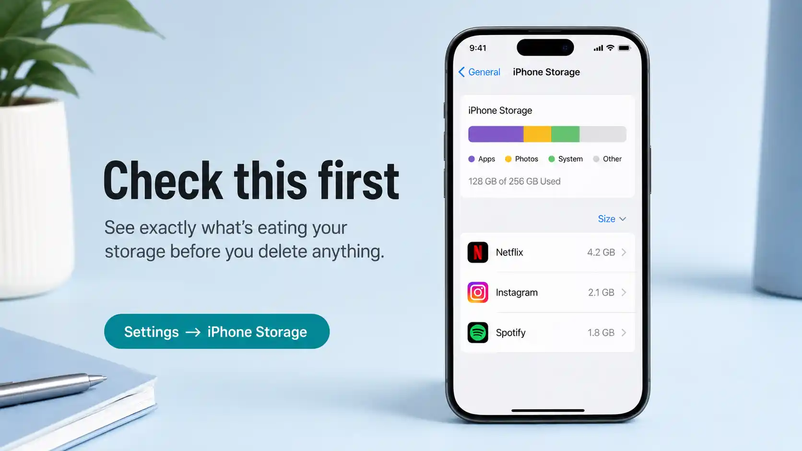
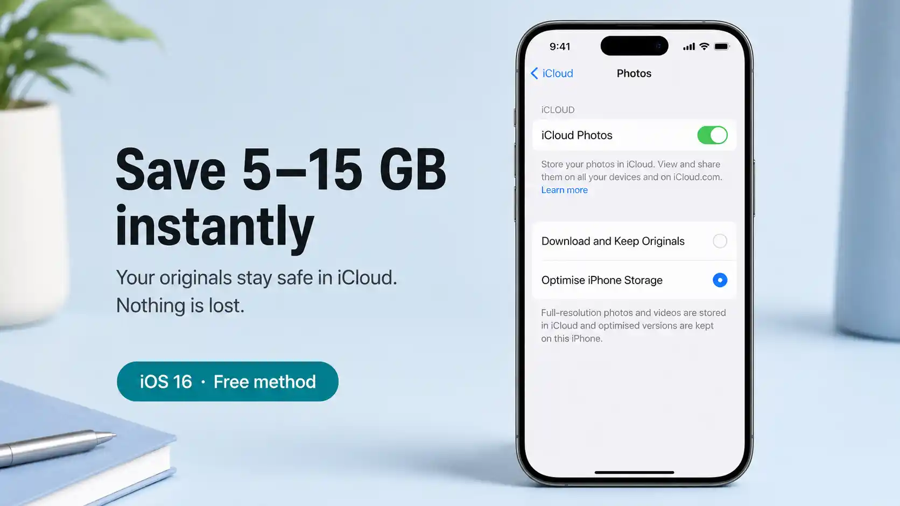

Why your iPhone storage fills up (faster than it should)
iPhones are built to make capturing life effortless — and that's exactly the problem. Every WhatsApp photo gets auto-saved to your Camera Roll. Every video you shoot is shot in 4K at 60fps, eating 400 MB per minute. Apps accumulate gigabytes of cached data invisibly in the background. Streaming apps download episodes you finished watching months ago.
The result: a typical 128 GB iPhone fills up within 2–3 years of normal use, and a 64 GB model often within 12 months. But here's what most guides don't tell you — less than half of that consumed storage is usually photos and videos. The rest is apps, caches, system data, and media downloads that are completely safe to remove, a point echoed by storage teardowns from Wide Angle Software and Smarty. So the goal isn't to delete memories — it's to clean up iPhone storage strategically. You can also clean up your Camera Roll separately for an even deeper photo clean.
Before doing anything, go to Settings → General → iPhone Storage (Apple's storage guide). Wait 10–15 seconds for it to fully load. You'll see a colour-coded bar showing exactly what's consuming your space. This tells you which method below will give you the biggest win — go there first.

Settings → General → iPhone Storage shows a full breakdown before you do anything. Apps listed below are sorted largest first.
Method 1 — Offload unused apps (the fastest win)
Apps are often the single biggest storage drain on an iPhone — not photos. A single game can take 2–4 GB. Creative apps like LumaFusion or Procreate can exceed 1 GB each. And most people have dozens of apps they haven't opened in months. For a deeper dive into which apps to remove, see our guide on deleting unused apps on iPhone safely.
Apple's Offload feature is the smartest solution: it removes the app itself (freeing the storage) but keeps the app's icon on your Home Screen and preserves all its data and documents. The moment you tap the icon again, it re-downloads from the App Store instantly. Nothing is lost.
Enable automatic offloading
-
1
Open Settings → App Store
Scroll down to the Automatic Downloads section.
-
2
Turn on "Offload Unused Apps"
iOS will automatically offload apps you haven't used when your storage is low. You can also trigger this manually (next step).
Offload apps manually (for immediate results)
-
1
Go to Settings → General → iPhone Storage
The app list is sorted by size — largest first. This is your hit list.
-
2
Tap any large app you rarely use
You'll see the app's exact storage usage, split between the app itself and its documents & data.
-
3
Tap "Offload App"
The app is removed but its data stays. If you want to fully delete the app and its data, tap Delete App instead — but only do this if you're certain you no longer need it.
Offload when: you might use the app again, or it has saved data (game progress, project files, login tokens). Delete when: you genuinely don't need the app or its data anymore — social media apps you've quit, old utilities, apps you downloaded once for a trip.
Method 2 — Optimise Photo storage with iCloud
Photos and videos are typically the largest category on any iPhone — but you don't have to delete them to reclaim that space. iCloud Photos has a feature called Optimise iPhone Storage that automatically keeps full-resolution originals safe in iCloud and stores smaller, device-optimised versions on your phone. The full versions are always one tap away.
How to enable it
-
1
Go to Settings → [Your Name] → iCloud → Photos
Make sure Sync this iPhone (or iCloud Photos) is toggled on.
-
2
Select "Optimise iPhone Storage"
This replaces the full-resolution photos on your device with smaller previews. The originals remain in iCloud and sync back instantly when you tap a photo to view it.
-
3
Wait for iCloud to sync
The optimisation happens over Wi-Fi in the background. Plug in your phone overnight for the first sync — it can take a few hours for large libraries.
The free iCloud plan is only 5 GB — almost certainly not enough for your photo library. iCloud+ plans start at £0.99/mo for 50 GB and £2.99/mo for 200 GB. If your iCloud account itself is full, that's a separate job from freeing on-device space. Prefer not to pay Apple? Google Photos offers 15 GB free.

Optimise iPhone Storage keeps your full library safe in iCloud while dramatically reducing on-device photo storage — often saving 5–15 GB.
Method 3 — Clear app caches and message attachments
Apps accumulate cached data — temporary files, offline content, downloaded media — that serves no long-term purpose but quietly consumes gigabytes. Unlike deleting an app, clearing its cache leaves the app fully installed with all your settings intact.
Check which apps have large caches
Go to Settings → General → iPhone Storage and tap any app. You'll see two numbers: App Size (the app itself) and Documents & Data (cached content). A Documents & Data figure that's larger than the App Size is a red flag — that app has been accumulating data.
Common culprits and how to clear them:
| App | What it caches | How to clear | Typical saving |
|---|---|---|---|
| Safari | Website data, history, cookies | Settings → Safari → Clear History and Website Data | 500 MB – 2 GB |
| Messages | Photos, videos, voice notes in threads | Settings → General → iPhone Storage → Messages → Review Large Attachments | 1 – 5 GB |
| Spotify | Offline downloads, cached streams | Spotify app → Settings → Storage → Clear Cache | 500 MB – 3 GB |
| Cached feed, Reels, DM media | iPhone Storage → Instagram → Offload, then reinstall | 300 MB – 1.5 GB | |
| Podcasts | Downloaded episodes | Podcasts app → Library → Downloaded → Edit → Delete | 200 MB – 2 GB |
| Netflix / Disney+ | Downloaded films and episodes | In-app Downloads section → delete watched content | 1 – 8 GB |
iOS doesn't expose a universal "clear cache" button. For apps that don't have their own cache-clearing option (Instagram, TikTok, many games), go to Settings → General → iPhone Storage, tap the app, tap Offload App, then reinstall it from the App Store. This clears all cached data while preserving your login and settings.
How to reduce System Data on iPhone (the grey bar)
If your storage breakdown shows a large grey System Data section — sometimes 10 GB or more — you've found the most misunderstood category in iOS. System Data (labelled "Other" before iOS 15) is a catch-all for caches, logs, Siri voices, downloaded fonts, streaming buffers, and temporary files iOS hasn't cleared yet. It isn't a bug, but it does grow unchecked, and it's a common reason your iPhone storage stays full even after you delete apps and photos.
You can't tap System Data to clear it directly, so you reduce it indirectly:
- Restart your iPhone. A simple restart lets iOS flush temporary caches it was holding. This alone often trims 1–3 GB of System Data.
- Clear Safari website data. Settings → Apps → Safari → Clear History and Website Data. Safari's cache is one of the largest contributors to System Data.
- Offload and reinstall your heaviest apps. Streaming and social apps dump buffered video into System Data. Offloading them (Method 3 above) forces iOS to discard that hidden cache.
- Shorten your Messages history. Old attachment thumbnails and caches count as System Data — setting Messages to auto-delete after 1 year (Method 4 below) shrinks it over the following days.
- Last resort — back up and restore. If System Data has ballooned past 15–20 GB and won't come down, a full backup and restore rebuilds iOS from clean, usually reclaiming the lot.
System Data fluctuates constantly. If it spikes after streaming a film or updating iOS, leave it 24–48 hours on Wi-Fi — iOS clears its own temporary files on a schedule. Only chase it manually if it stays high for several days.
Method 4 — Manage Messages and iMessage attachments
Messages is one of the most overlooked storage drains on iPhone. Years of group chats, shared photos, voice notes, and GIFs accumulate silently. A busy group chat over 3–4 years can easily consume 4–6 GB.
Delete large attachments in bulk
-
1
Settings → General → iPhone Storage → Messages
Tap Review Large Attachments. iOS lists all photos, videos, and files sorted by size.
-
2
Tap Edit → select items → Delete
You can select multiple attachments at once. Focus on videos and large photos — they take the most space.
Set messages to auto-delete after 1 year
Go to Settings → Messages → Keep Messages and change it from Forever to 1 Year or 30 Days. iOS will ask to delete older messages immediately. This prevents the backlog rebuilding over time.
Unlike photos (which go to Recently Deleted for 30 days), deleted messages are gone immediately. Check the large attachments list before bulk-deleting — if there's a photo or document you want to keep, save it to Files or Photos first.
Method 5 — Remove downloaded music, podcasts, and videos
Offline media is one of the easiest storage categories to clean because everything here is safe to delete — it can all be streamed or re-downloaded. Yet most people never clear it, and it compounds over months.
- Apple Music: Music app → Library → Downloaded Music → Edit → Delete entire library or individual albums
- Spotify: Settings → Storage → Delete Cache, then remove individual playlists under Downloads
- Apple Podcasts: Library → Downloaded Episodes → swipe left to delete, or Edit → Select All → Delete
- Netflix: App menu → Downloads → delete watched episodes and films
- Audible: Library → swipe on a title → Remove Download (keeps it in your library, just not on device)
- YouTube Premium: Library → Downloads → tap the download icon on any video to remove it
Method 6 — Move large files to cloud storage
The Files app on iPhone is often overlooked — but it can harbour large PDFs, presentations, downloaded ZIP files, and voice memos that have no reason to be stored locally. Moving these to iCloud Drive, Google Drive, or Dropbox keeps them accessible without consuming on-device storage.
Find large files in the Files app
-
1
Open the Files app → Browse → On My iPhone
This shows everything stored locally on the device (not in iCloud Drive).
-
2
Tap the three-dot menu (⋯) → Sort by Size
The largest files surface to the top. Look for anything over 50 MB that you no longer need on-device.
-
3
Move to iCloud Drive or delete
Long-press a file → Move → iCloud Drive (to keep it accessible anywhere), or swipe left → Delete if you no longer need it at all.
Voice Memos — an often forgotten drain
Long voice recordings (lectures, meetings, interviews) can be 50–500 MB each. Open Voice Memos, tap Edit, and delete any you've already processed or no longer need. Recordings you want to keep can be exported as M4A files to Files or cloud storage.
Quick wins — ranked by effort vs. reward
| Action | Time needed | Typical storage saved | Difficulty |
|---|---|---|---|
| Enable Optimise iPhone Storage (iCloud Photos) | 2 min | 5 – 20 GB | Easy |
| Delete Netflix / streaming downloads | 3 min | 2 – 8 GB | Easy |
| Clear Message large attachments | 5 min | 1 – 6 GB | Easy |
| Offload top 5 largest apps | 5 min | 2 – 10 GB | Easy |
| Clear Safari cache | 1 min | 500 MB – 2 GB | Easy |
| Delete duplicate photos (iOS Duplicates album) | 10 min | 500 MB – 5 GB | Easy |
| Clear Spotify / podcast downloads | 5 min | 300 MB – 3 GB | Easy |
| Move large Files app documents to cloud | 10 min | varies | Medium |
Keeping storage clear going forward
A one-time clean is valuable, but the goal is to never see that "Storage Almost Full" notification again. Three habits keep your iPhone storage healthy permanently:
- Monthly storage check. Set a 5-minute reminder at the start of each month: open Settings → iPhone Storage, glance at the bar, and clear anything obviously large. Catch it early and it never becomes a crisis.
- Turn off WhatsApp and Instagram auto-save. WhatsApp: Settings → Chats → Save to Camera Roll → Off. Instagram: Settings → Original Photos → Off. These two apps alone are responsible for the majority of unexpected storage growth.
- Keep "Offload Unused Apps" on permanently. Settings → App Store → Offload Unused Apps. Set it once and forget it — iOS handles the rest silently in the background.
- Set Messages to auto-delete after 1 year. Settings → Messages → Keep Messages → 1 Year. Four years of group chats with holiday photos will never accumulate again.
First of the month: check iPhone Storage (2 min), empty podcast downloads (1 min), delete streaming content you've watched (1 min), clear Safari cache (30 sec). That's under 5 minutes to keep your phone running smoothly all month.